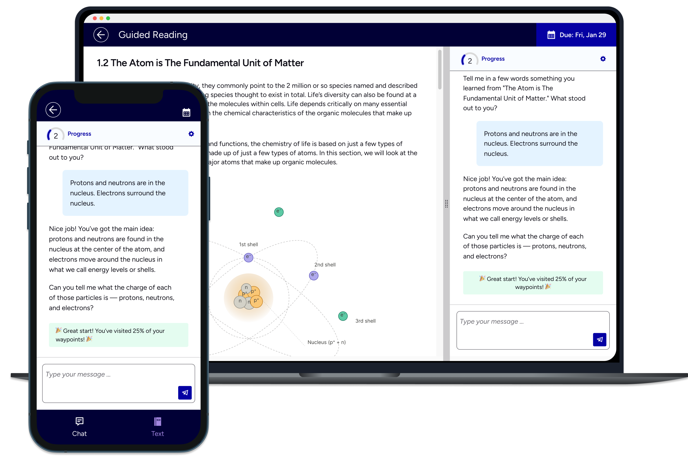
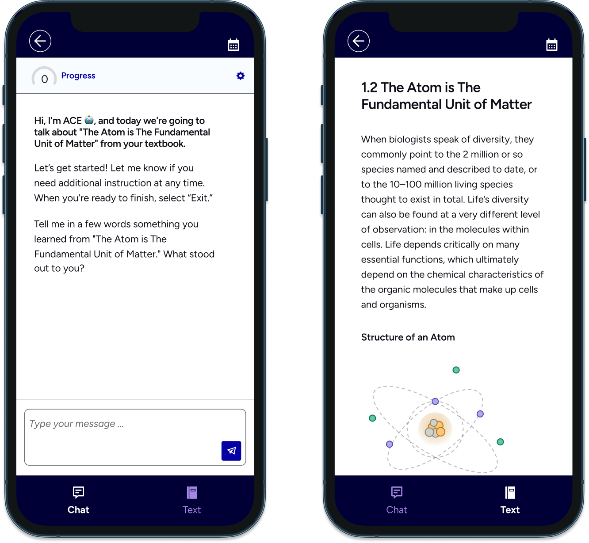
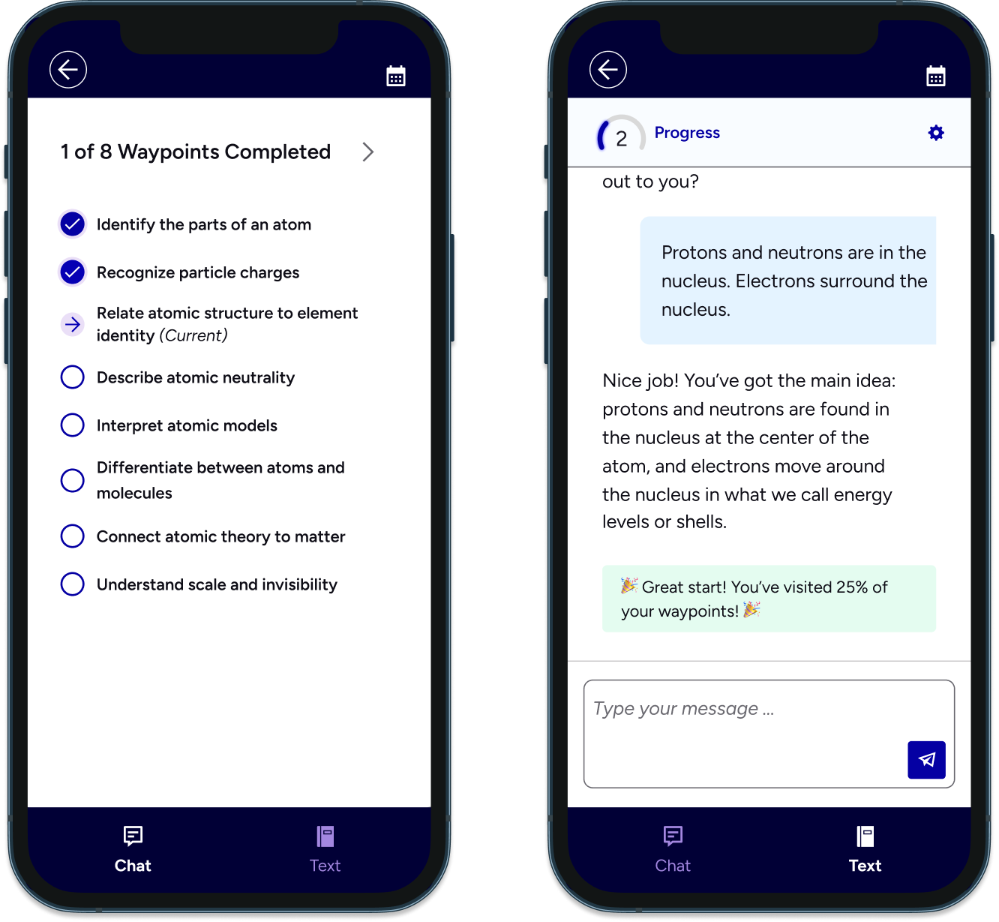
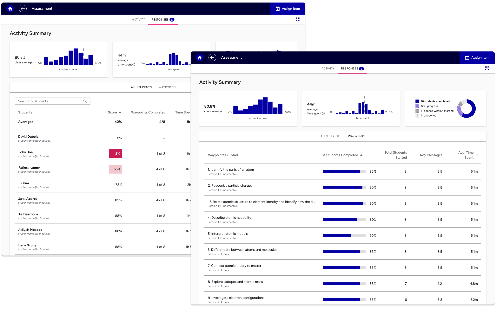
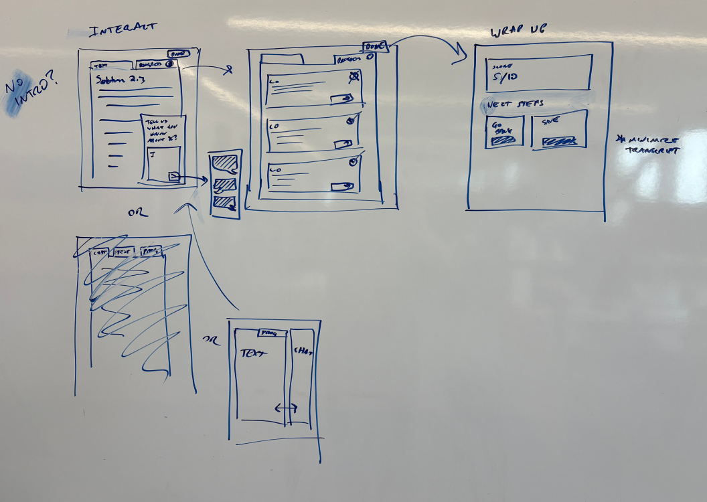
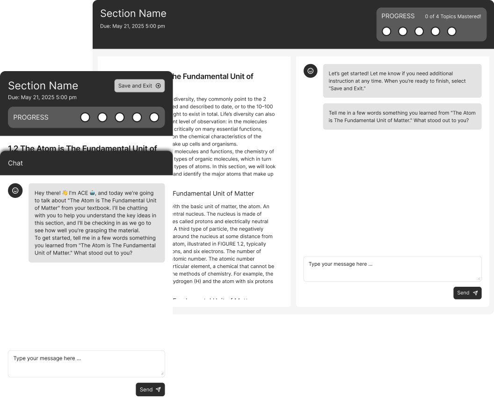
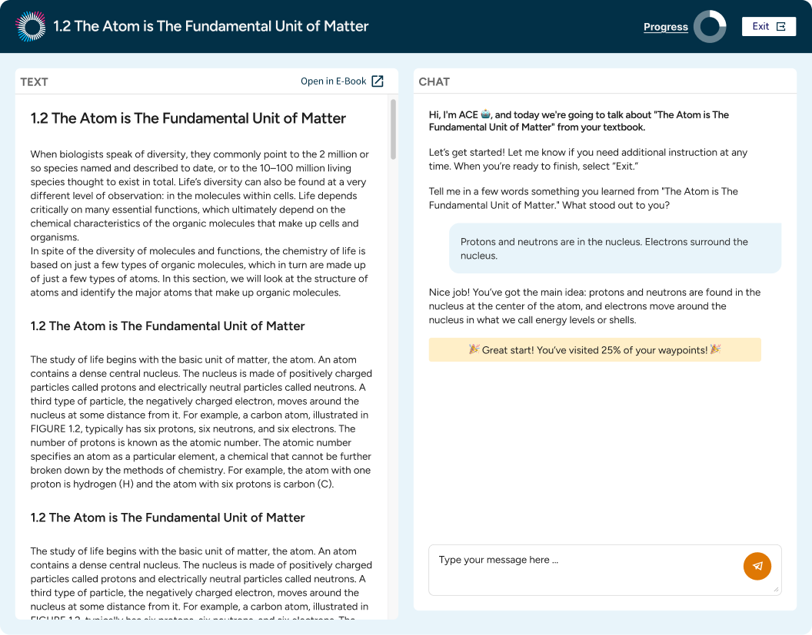

Guided Reading: Designing an AI-Powered Activity Students Actually Want to Use

The Problem
Instructors face a classic problem: It's hard to get students to actually do the reading, and harder still to know whether they understood it. Traditional eBook applications check completion, not comprehension.
The Solution
Guided Reading was built on a different premise. What if the assignment itself could meet students where they are, adapt to what they know, and make them genuinely engage with the material? How might we make the assignment feel less like a box to check and more like a conversation?
Guided Reading is an AI-powered reading activity integrated into Macmillan Learning's Achieve platform. Students are assigned a session tied to specific course content. Rather than passively reading and answering multiple-choice questions, students engage in an adaptive dialogue with an AI that asks questions, responds to their answers, and adjusts in real time.


For instructors, Guided Reading fits into existing workflows without adding unnecessary work. Assignments are created directly inside Achieve and deployed to Canvas, Blackboard, or any LMS the school already uses. When a student completes an activity, performance data flows automatically into the gradebook, without separate systems to manage.

The Impact
A pilot program for students began with a rough prototype, but after a UX overhaul was implemented the data told a clear story. Students were completing more waypoints, understanding more of the reading material, and reporting a better overall experience.
90%
Student activity completion rate, up from 50% before UX investment
+78
Student NPS score
36%
Of instructors indicated likelihood to switch from their current product for access to Guided Reading
88%
of students reported feeling more confident in their understanding of the material
The Process
Where it started

In early 2025, the product team at Macmillan Learning developed an initial concept for Guided Reading and ran a proof of concept with instructors. The signal was promising but the user experience was rough. The vibe-coded prototype was built to see if the idea was technically possible, rather than serve a user.
When I came on board, the team was excited and eager to move fast. I wanted to maintain the momentum, while also making sure we were building with user-centered principles. I first ran a series of workshops with other UX designers, sketching in different directions before committing to any of them. From there, I moved into lo-fi designs, got all the stakeholders on the same page, and handed off early wireframes for engineering to begin prototyping.
Moving fast on purpose

The lo-fi prototype was built with a specific goal: Don't get precious about the UI, just test if the core idea works. Can the AI perform well enough to actually help students? Does the fundamental activity framework make sense? And most importantly, would students actually engage with this thing?
We tested with students and instructors, and the results were promising. One piece of data stood out: In a survey of instructors, 36% said they would be likely or very likely to switch from their existing product to a comparable one that included Guided Reading activities. In EdTech the barrier to switching is high, and that kind of number was a strong signal.
Where UX made the difference

We moved into mid-fidelity, where I started working through the finer details. Better feedback states, clearer progress signals, and refining the mobile view. We know students are likely to be doing these assignments on their phones, so we wanted to make sure that experience was easy.
At this time I also gave input into the text responses the AI was returning — length, tone, and how it framed feedback to students.
The testing results after these updates were encouraging. Before the UX overhaul, 50% of students completed an activity. After the redesign was implemented: 90%. And students were enjoying activities more. Guided Reading earned a student NPS score of +78, well above the threshold most researchers consider "excellent."
Designing for a real product ecosystem
In Q4 2025, the decision was made to fully implement Guided Reading into Achieve, Macmillan's primary courseware product. Achieve is a complex product, and sits in the middle of an ecosystem of other products that instructors deal with every day.
To address this ecosystem I had to think beyond the assignment itself. How does an instructor assign a Guided Reading? What options should they have, and how does assigning it fit into their existing workflow? How does student performance feed into the gradebook they already use? How does this assignment get deployed to a learning management system?
Instructors are busy and have set routines. A beautiful product that doesn't fit into those routines is a product that doesn't get used. I worked through each of these points carefully, designing for instructors and admins alongside students, and delivering final design specs to engineering.
Reflection
The biggest challenge on this project was balancing speed and quality. There was pressure in the beginning to run with some assumptions about how the user experience should work, made before I joined the project. Slowing down to run workshops and rebuild on better foundations sometimes felt like I was adding friction and pushing back. In the end, it was the right call. The final work went faster because the foundations were clearer.
What comes next? Guided Reading exits beta this fall, and I'm starting to think about what the post-release updates could be. I'd love to explore voice interaction, where the dialogue happens out loud in a Socratic fashion. There's also opportunity to add more moments of delight inside the experience, the small, satisfying feedback that makes a student feel like they're making meaningful progress.